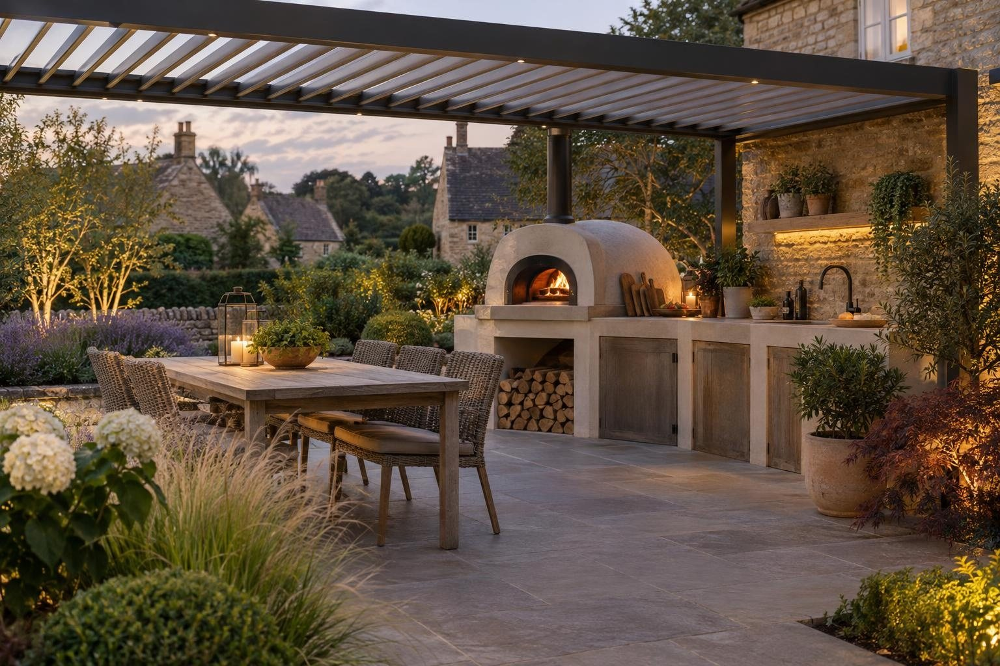
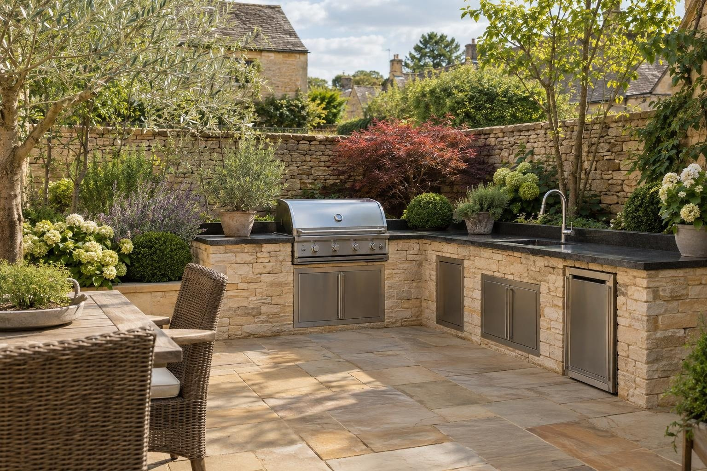

Outdoor kitchens in Kettering
Outdoor kitchens in Kettering, from slim layouts behind Victorian terraces to full cooking areas on new Hanwood Park plots.
In Kettering a built-in outdoor kitchen with cabinets, worktop and space for appliances starts from about £6,000, and one fitted out with a grill, pizza oven, sink and fridge is typically £8,000–£20,000, with gas, power and water connections priced on top. The main local consideration is what lies under the garden, from ironstone and clay to compacted new-build subsoil.
- Fully equipped
- £8,000–£20,000
- Planning
- Not normally needed
- Ground
- Ironstone and clay; compacted new-build plots
- Guarantee
- 5 years, in writing
Our 2026 guide prices. Your fixed price comes in writing after the site visit. Full breakdown: outdoor kitchens cost guide.
Outdoor kitchens in Kettering
Kettering covers a wide range of gardens. A Victorian terrace near the centre may have a long, narrow plot with access only through the house, while a new home at Hanwood Park has an open rectangle and a thin layer of topsoil over compacted subsoil. We design the kitchen around the space you actually have, on its own concrete base, with block or stone-faced counters, weatherproof worktops and room for the grill, oven, sink and fridge.
Prices shown are guides. We confirm a fixed price in writing after the visit, when we know how materials get to the garden, how far services must run back to the house and what the ground is made of. We work throughout Kettering, from the Headlands and the streets near the centre to the interwar estates and Hanwood Park, and in Barton Seagrave, Burton Latimer, Geddington, Broughton, Cransley, Pytchley, Rothwell, Desborough and Mawsley.
What makes Kettering different
Ground around Kettering ranges from ironstone to clay, and new-build plots are often compacted subsoil under a thin skin of topsoil. Neither is a reason not to build, but both change the base design, so we check each garden first. Kettering has 26 conservation areas and a handful of site-specific Article 4 directions covering individual streets or buildings, so we check your address before planning anything visible from the road.
Behind a terrace off the Headlands, the typical kitchen is a narrow single run along one boundary, with a grill and a worktop and perhaps an under-counter fridge, built from materials carried through. On interwar and post-war estates, or in Barton Seagrave, gardens allow an L-shape with a sink. Hanwood Park plots often get a kitchen planned alongside a first proper patio.
Sources: North Northamptonshire Article 4 directions · Hanwood Park.
Permissions in Kettering
- PlanningAn outdoor kitchen in a rear garden does not normally need planning permission. A roof or pergola over it has to meet the outbuilding height and size limits. Gas work must be done by a Gas Safe engineer, and new outdoor circuits are notifiable electrical work. Listed buildings and the Kettering conservation area have tighter rules, so we check your address before anything is designed. Planning Portal: outbuildings
- TreesTrees in a conservation area need six weeks' notice before work, and protected trees need consent; both are free. North Northamptonshire: tree protection
- Design and priceWe measure up, check the ground and the planning position, and give you one fixed written price.
Rules checked October 2026.
What you get in Kettering
- Narrow layouts for long terrace gardens with no side access
- Base designed for ironstone, clay or compacted new-build subsoil
- Address checked against Kettering's site-specific Article 4 directions
- Built on a concrete base, not on the patio slabs
- Weatherproof worktops and stone or rendered faces to match the garden
- Grill, pizza oven, sink and fridge planned in from the start
The specification
- Base dug and concrete slab laid
- Ducts for gas, power and water run in before paving
- Blockwork carcass built and faced
- Worktops, doors and appliances fitted
- Services connected and certified
- Five year workmanship guarantee in writing

Rated 5.0 from 37 Google reviews
“Done a great job doing my sandstone patio and block paved drive in Corby, 10/10 service and very helpful with helping pick a design. Highly recommend”
Daniel, Corby · Sandstone patio and block paved drive — Google review
“We’re absolutely delighted with our new patio from Rutland Driveways & Landscaping. We contacted Lewis to build our new patio after a personal recommendation; we cannot speak highly enough of the workmanship of his team and the level of service that Lewis provides. …”
Danny, Oakham · Porcelain patio — Google review
Everything else we do here


Outdoor kitchens in Kettering: questions
How much is an outdoor kitchen in Kettering?
Is planning needed for an outdoor kitchen in Kettering?
We only have access through the house. Can you still build one?
Is the soil on a new-build plot good enough to build on?
Outdoor kitchens nearby
Request a site visit in Kettering
We measure up, check levels and drainage, and send a written proposal with the build-up, the programme and one whole price. No pressure and no follow-up sales calls.